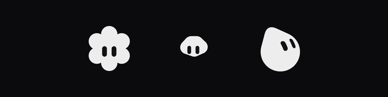

给 AI agent 装一张会表达状态的脸。下面是它在动的样子——静态展示， 因为引擎不随仓库分发，交互版本要在本地跑。
在的 · 想想 · 来了来了 · 在做了 · 卡住了 · 搞定

花 · 云 · 水滴 —— 三行路径字符串，引擎把它们变成会眨眼的脸
240 × 240，每个约 1.6 秒循环
引擎（373 KB）是从 Grok Bot 里提取的，版权不归我们，所以不进仓库。
本地三步就能跑起来：
npm i peepface npx peepface-extract "/Applications/Grok Bot.app" python3 -m http.server 8000 # 打开 http://127.0.0.1:8000/studio.html
换装间可以换 26 种形状、11 色板、试穿 22 个状态、导出 PNG/SVG。
代码和文档在 GitHub。